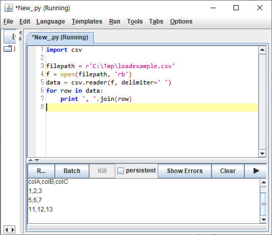
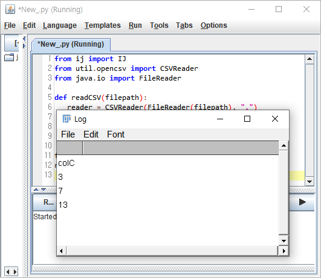
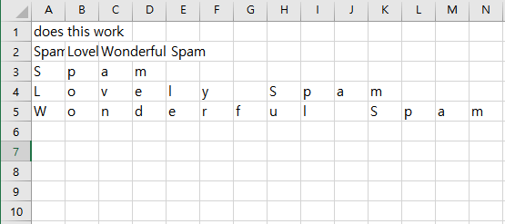
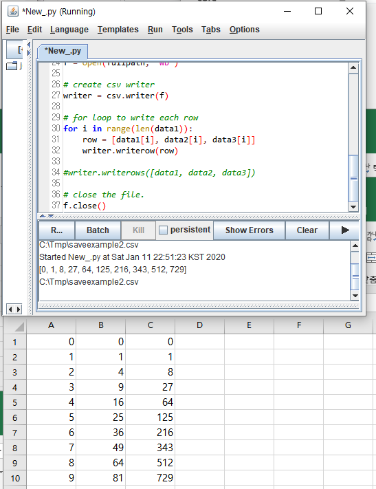
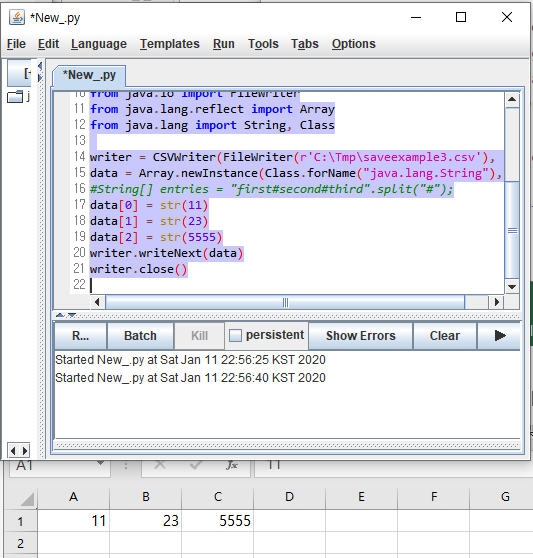
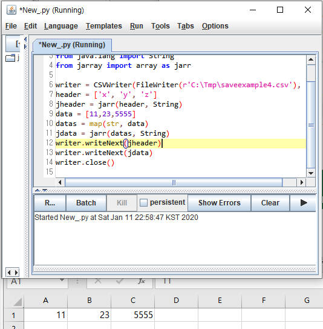

Reference
1. Loading CSV File
csv파일을 읽는 예제입니다.예제 파일은 여기에서 다운받을 수 있습니다.
1.1. CSV 파일 읽어서 결과 보여주기
1 | import csv |
- 실행결과

1.2. CSV 파일 읽어서 특정 컬럼을 창으로 띄워주기
1 | from ij import IJ |
- 실행결과

2. Save as CSV File
csv파일을 쓰는 예제입니다.
2.1. python방식 : pythonic
1 | import csv |
- 실행결과

2.2. Numerical data (pythonic)
1 | import os, csv |
- 실행결과

2.3. java 활용
1 | from util.opencsv import CSVWriter |
- 실행결과

2.4. java의 jarray module 활용
1 | from util.opencsv import CSVWriter |
- 실행결과
